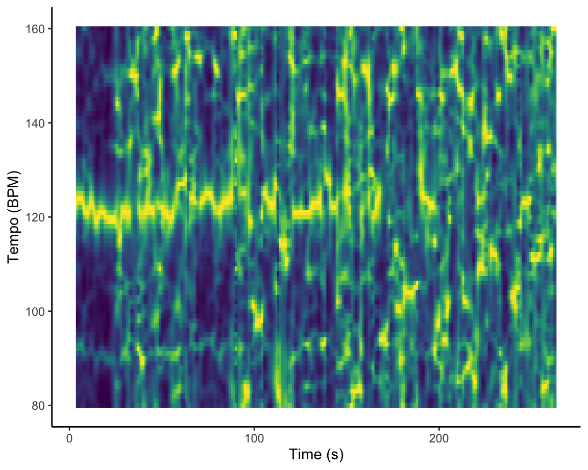

Introduction
Introduction
Sad Playlists
On spotify you will find many playlist with music to cry your heart
out to or sad songs, music to soothe or to swoon in. I have had a
playlist like this for a long time, but when I started asking around my
friends if they had one for themselves I was surprised by the
differences between these playlists. That is why I think it would be
very interesting to compare three of these playlists with each other.
Playlists from my friend Puck, boyfriends sister Charlotte, and my own
sad playlist. I expect to find a lot of similarities because of the
common theme of the sad playlist, but am more intrigued by the
differences and how they could correspond with the creators experience
of sadness and the music in their playlist.
What do we know from the literature?
In the literature about emotional music, sadness is seen as a vague term that can describe a lot of different emotions for different people. A distinction is made between melancholy and grief where melancholy is a more low energy feeling of sadness, and grief more high energy. In melancholy a person will feel lethargic and down, while in grief a person would be crying or wailing in the experience of sadness. (Warrenburg, 2020)
Huron (2015) hypothesizes that melancholy characterizes itself in music in a quiet and muted ambiance, with a slow tempo, sustained notes and minor chords. On the other hand, grief will show itself in music with much more loudness, sharper and more distinct notes and a higher tempo compared to melancholic music.
To make hypotheses about the analyses to come and to give context to the rest of the corpus, I have asked a couple of question to the creators to see from which standpoint the playlists were created and how they perceive the type of music in their playlist.
Spelen - Pucks playlist
What does this playlist mean to Puck?
This playlist began as a collection of beautiful piano songs that moved Puck, which was why she wanted to play them on the piano. But because of this, she realised, she was also making a playlist of songs that made her feel emotional. So she just went with it and added more song that also gave that feeling. When I asked her what kind of emotion she felt when listening to these songs, she told me she would feel really emotional and down but not in a raging way; more in a small and sensitive way. Referring back to Warrenburg (2020), what she describes is probably more in line with the feeling of melancholy.
How would they describe the music in their playlist?
Understandably, this playlist mostly contains piano music. Mostly of the calm and emotionol type, with lots of minor chords, not the theatral type of piano music. It maybe looks like a cohesive playlist, but for Puck it feels like a bit of a random bunch of songs that only make sense for her to be there. Like for example the theme song of How to tame a dragon. She said the most describing song for the playlist would be Aura, but Abandow Windom is more of an experimental outlier. Containing the same feeling, but belonging to a different genre the Coldplay and Billie Eilish songs are a bit of an outlier but also belong at the same time.
Nostalgia - Charlottes playlist
What does this playlist mean to Charlotte?
Nostalgia is a playlist Charlotte created to put songs in that were not really the songs she listened to just randomly on the go. These were song she wanted to have the time to listen to, to understand the lyrics and feel the emotions they would give. She would not describe it as a crying playlist, but more as a playlist of songs that move her and often give her a nostalgic feeling. They take her to another time, whether that is to a nice memory or to another era she never lived like in the song Moonlight Serenade. This nostalgic feeling is somewhat of a bittersweet feeling; sweet because of the warmth nostalgia brings, but sad because of the emotion the artist evokes with the song. When she feels down, she listens to it as a sort of escape from her own feelings, to feel that nostalgia.
How would they describe the music in their playlist?
She would describe the playlist as a collection of songs from pop, classical music and jazz that all have the sharing factor that they have that nostalgic feeling to them. Time has come again is a special song for her, one that especially moved her to tears because of the acoustics; or what in the literature could be compared to timbre. Other songs like That Funny Feeling bring her back to when me and my boyfriend were singing it on the guitar together during covid.
Urgh - My playlist
What does this playlist mean to me?
Now Ive asked myself the same questions I asked Puck and Charlotte. I created my playlist when I was 16 and feeling a lot, because of puberty and all the feelings that obviously come with that. I would mostly listen to it when I was crying, it would feel good to let all the emotions and doubts out to the music. During the years Ive added some songs that still move me, but maybe in a lighter way like Loose Ends from Loyle Carner but more because it gives me that Nostalgic feeling we talked about in the section from Charlotte.
A description of the music in the playlist
The most part of the songs in the playlist are pop songs with strong lyrics and quite a loud feeling. Thru these tears from Honne would be a good example of that, with quite a fast tempo and strong beat and vocals. Imagine from John Lennon might seem like an outlier in this playlist. Because of the hopeful lyrics and major chords most people I know find it a happy song, but it gives me a very strong melancholic feeling, making me tear up.
Feeling of the music
Differences in Valence
In this violin plot we can beautifully see the differences in valence between the playlists. Valence is an attribute spotify uses to measure how happy a song sounds. The score ranges between 0 and 1, with a higher score meaning a happier song or a lower score meaning a sadder or angrier song.
All three playlists are on the lower side of the valence scale, which is in line with it being sad playlists. This plot suggests Nostalgia has the widest range of valence throughout the playlist, which could be explained by the fact that Charlotte also chose the songs on specific memories she has with them which dont have to correspond with the song evoking sad feelings.
Spelen clearly contains the most low scoring songs on the valence scale. This could be because of the many calm and minor filled Piano songs in them, like Puck described.
Lastly, Urgh also has a bit of a wider range of valence in its songs, which could explained by the abundance of pop songs in the playlist.
Differences in Loudness
In the plot on the left tempo was plotted against loudness, with the size of dots indicating valence. I would not say there is not a strong correlation between valence and the other variables.
The playlists Nostalgia and Urgh both have a much higher loudness than spelen, which would suggest following Huron (2015) that these playlist correspond more with emotions of grief and spelen with emotions of melancholy. While this is mostly true with the experiences of Puck and myself, this is not the case for Charlottes Nostalgia. That playlist evokes more of a melancholy feeling, contradicting Hurons theory on this part.
On tempo, there will be more under Analyzing tempo.
Timbre
Column
Aura
Time Has Come Again

I Always Wanna Die

{column-width = 400}
Timbre is a powerful feature Spotify uses to describe the feeling of a song. It is split into 12 feature from c01 to c12. The only problem with these feature though is that from c05 it is hard to put into words what they describe. Even though, they help a lot when clustering songs to give good recommendations to users. C01 could be seen as loudness, and c02 as brightness.
In the plots on the left we can see the timbre for one of the most characteristic songs of each playlist, respectively Spelen, Nostalgia and Urgh. It is clear that the timbres differ a lot. Especially the song Aura from Pucks playlist appears to be very strong on only one timbre feature: c02. This could be because the solo piano song has a very consistent feeling to the sound; a piano with a lot of sustain. This feature is also seen on the other two songs, but among other features at least as strongly present as c02.
Time Has Come Again from Charlottes playlist is quite strong on the features from c01 to c06, but at some moments strongest at c05. I Always Wanna Die form my playlist most heavily represent the first three features. It does vary throughout the song. For exxample, between 160 and 180 seconds we see c03 falls away and c02 becomes stronger. At this moment in the song the other instruments fall away and only the keyboard and singer stay. This could be logical seeing that Aura which features only a piano als strongly has c02. It is hard to draw very strong conclusions from these findings, but is appearant that the songs differ quite a lot from each other in timbre.
Repetitiveness
Una Mattina : self-simmilarity in timbre
To the left we can see the self-simmilarity matrix of Una Mattina from composer Ludivico Einaudi from Pucks playlist Urgh. The song evokes emotion by often repeating the same melodie with a sort of urgency. This repetition can clearly be seen the matrix. Black shows where the pitch was the same compared to another time stamp in the song, yellow shows it is very different. The checkerboard pattern suggest that for example around 45 and 75 seconds and and 140 to 170 seconds a very reptitive melody was played. The black diagonal lines indicate that that those moments in the song were very repetitive compared to themselves, but also to the other moment. We can hear this in the song with the piano repeating the same melody during those two segments.
505 : self-simmilarity in pitch
For the second self-simmilarity matrix, timbre was used. The song from Charlottes playlist Nostalgia starts with some mysterious keyboard chords before the rest of the instruments come in. This shows itself in the matrix in the yellow bar between 0 and 10 seconds. Later, we can almost distinguish two big blocks that are quite similar to itself in timbre, but different to each other. The songs stays quite consistant up to 150 seconds, when Alex Turner starts picks goes into the chorus for a second time with much more energetic emotion and more distortion on the guitar. Until the end, this louder sound stays consitant.
Analyzing tempo
Tempo in the playlists

In the box-plot to the left we can see how the tempo varies a bit between playlists. Urgh has the smallest range of tempi, then spelen and lastly Nostalgia which also has the lowest tempi. This could be because of the many pop songs in urgh, often being similar to each other in these kinds of features. The big range of tempi in Nostalgia could be explained by the many different genres it has. In the coming boards we will zoom in on specific songs in the corpus to see if we can analyze the tempo more specifically.
Zooming in: specific analyses of tempo
Time Has Come Again by The Last Shadow Puppets, Alex Turner and Miles Kane was one of the songs Charlotte found most moving in ehr playlist Nostalgia. On the left a tempogram was made of the song, which tries and find the tempo throughout the song through beat tracking. Although there is no drums in this song, there is a guitar constintently striking a chord. We can see that the beat tracker could indeed find quite a consistent beat of around 110 bpm throughout the song until just before the end. Around 130 seconds the guitar stops and only strings stay, which we can see in the tempogram not finding anything to match a beat to.
Abandon Windon: to find tempo in an experimental song
Puck explained how she thought Abandon Window was an experimental song in her playlist Spelen. The song consist of a piano playing a chord with long pauses in between and a sort of background epic ethereal sound, but with no clear tempo or melody to the song.
We can see this very clearly in the tempogram. The tempogram is cyclic, which means that it should only show the tempo it is most confident of, but here we see that throughout the song it cannot find any tempo. Especially compared to the previous slide we can see here that beat-tracking with no consistent new notes or sounds is nearly impossible.
Exit Music (For a Film): when noise interupts a beat

Exit Music (For a Film) from Radio Head is a song that I think stronly belongs in my playlist urgh. Hard drum and lots of distortion and noise make it a loud song, much in line with Hurons (2015) theory about music for the emotion of grief. Unfortunately, for the beat-tracking making the tempogram all this extra noise makes it hard to distinguish which new sounds in the music indicate the start of a beat.
The song begins with only a strumming guitar for 30 seconds, where the tempogram is still very sure of the tempo around 120, but when the song comes on it already finds it harder to keep to track.
Later, around 170 seconds the whole instrumentation of the song changes and a very distorted sound comes in together with a loud drum. Even though there is a loud drum, all the distortion confuses the beat-tracker so much that from that time stamp it totally loses track of the tempo.
Analyzing harmonies
Testing hypotheses about Imagine from John Lennon
To the left, we can see the chromogram of the song Imagine from John Lennon. The most frequent notes by far are C, E, F, and G. This is quite logical because the key of the song is C major which would have C as the base, E as the third and and G as the fifth. As the piano changes between chords, F is also frequently played. This confirms that the song is in major like discussed in the introduction and therefor a bit out of ordinary for sad music.
An analysis on major chords through a grieving song
Whats interesting is that even though this song is called Thru These Tears (again from the playlist urgh) the song still seems to be mostly in major. Would that together with the previous slide suggest that sad songs do not necessarily need to be in minor? Or is this more the case for grieving songs and less the case for the melancholic songs, seeing that the playlist urgh has more of a grieving purpose.
Minor and major distribution through the playlists
The plot on the left confirms our suspicions from the last slide. It shows that the amount of minor and major songs in the three playlists, with a mode of 0 meaning the songs with a minor key and a mode of 1 meaning the songs with a major key. It shows that both Nostalgia and Urgh have around twice as much major songs as minor songs. Spelen has the biggest tendency towards major songs with around 4 times as much major songs.
Clustering the songs
Clusters
column
Three clusters
column {data-width = 200}
By using hierarchical clustering, the three clusters on the left were formed form all songs in the whole corpus. The cluster were based on the following spotify features: danceability, energy, loudness, speechiness, acousticness, instrumentalness, liveness, valence, tempo and duration.
The clusters that were formed based on these features surprisingly form really close clusters to the three original playlists. The cluster on the left shares many songs with Spelen. The middle and right one have a bit of a mix of songs from Nostalgia and Urgh, but with the middle one leaning more to Nostalgia and the right one more to Urgh.
Conclusions
Conclusion
column
In this portfolio we have analysed many different aspects that music entails and used it to understand the songs themselves better, and to generalize our findings to understand these playlists better. We have found many similarities, but even more differences.
This portfolio started as a search into sad playlist, but already soon it became clear that the emotions Puck, Charlotte and me felt when listening to these playlists differed a lot. For Charlotte and Puck the feeling they felt could more be described as melancholy in Warrenburgs (2020) work. The feeling I felt for my playlist leans more to grief, but also mixed with melancholy.
The first big differences can be seen in valence and in tempo on playlist level. Where Nostalgia and Urgh have quite a wide spread of valence and tempi in the playlist, Spelen had a much lower valence, meaning a less happy feeling throughout the playlist. The loudness was also consistently lower.
Timbre features also differed when comparing characteristic songs for the playlists, but could not tell us much more than that because of the unclarity of the meaning of timbre features. Furthermore, using self-similarity matrices as a tool to analyse repetition in songs showed how repeating melodies in the piano music in Spelen or intensifying the timbre in pop/rock songs in Nostalgia made the listener feel the emotion of the song more.
Even though Huron (2015) predicted many minor chords for melancholic music, we saw all three playlists had much more major key songs. Spelen had the biggest proportion of major keys, which is unexpected. Both because it had the lowest valence overall and because Puck would describe the music in the playlist as melancholic.
But still, when clustering all the songs using many different features the clusters created had great similarity with playlists. This suggests that the playlist do have a sort of self-similarity and the algorithm recognized these playlists as different groups of songs with overlapping features.
So in conclusion, there were quite some differences between the playlists but they did not come forward like Huron (2015) predicted when making the distinction between melancholy and grief. For future analyses, it would be interesting to investigate if minor or major chords and keys do really have such a strong correlation with emotion of the song. This portfolio suggest other features must be more at play.
References
References {data-width = 200}
Lindsay A. Warrenburg (2020) Redefining sad music: Musics structure suggests at least two sad states, Journal of New Music Research, 49:4, 373-386, DOI: 10.1080/09298215.2020.1784956
Huron, D. (2015). Affect induction through musical sounds: An ethological perspective. Philosophical Transactions of the Royal Society B: Biological Sciences, 370(1664), 20140098. https://doi.org/10.1098/rstb.2014.0098 [Crossref], [PubMed], [Web of Science ], [Google Scholar]